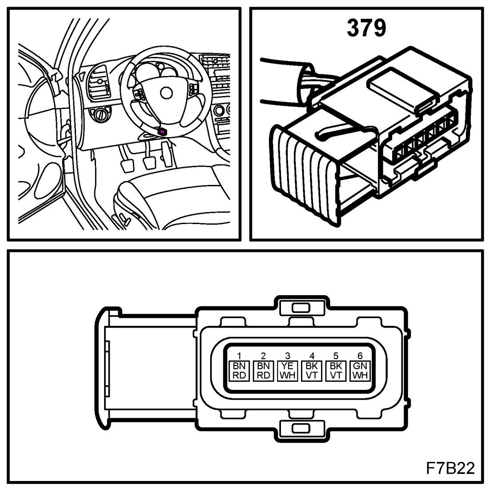

Operation CHARM
: Car repair manuals for everyone.
Home
>>
Saab
>>
2011
>>
9-3 FWD (9440) L4-2.0L Turbo
>>
Repair and Diagnosis
>>
Powertrain Management
>>
Sensors and Switches - Powertrain Management
>>
Sensors and Switches - Computers and Control Systems
>>
Accelerator Pedal Position Sensor
>>
Locations
Accelerator Pedal Position Sensor: Locations
Accelerator Pedal Position Sensor (379)
Location: on pedal bracket
